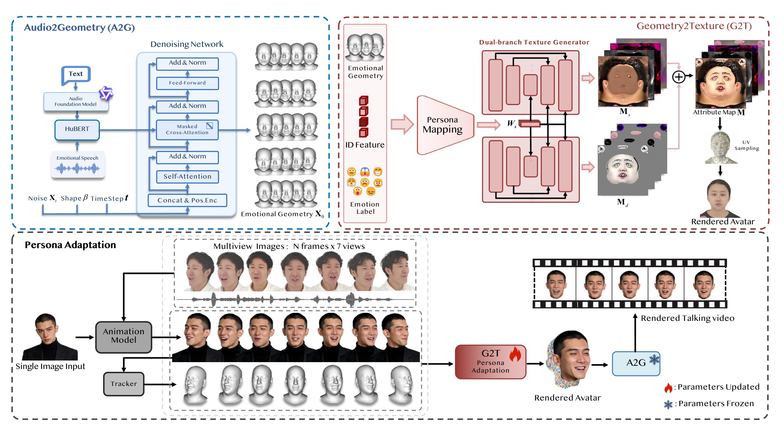
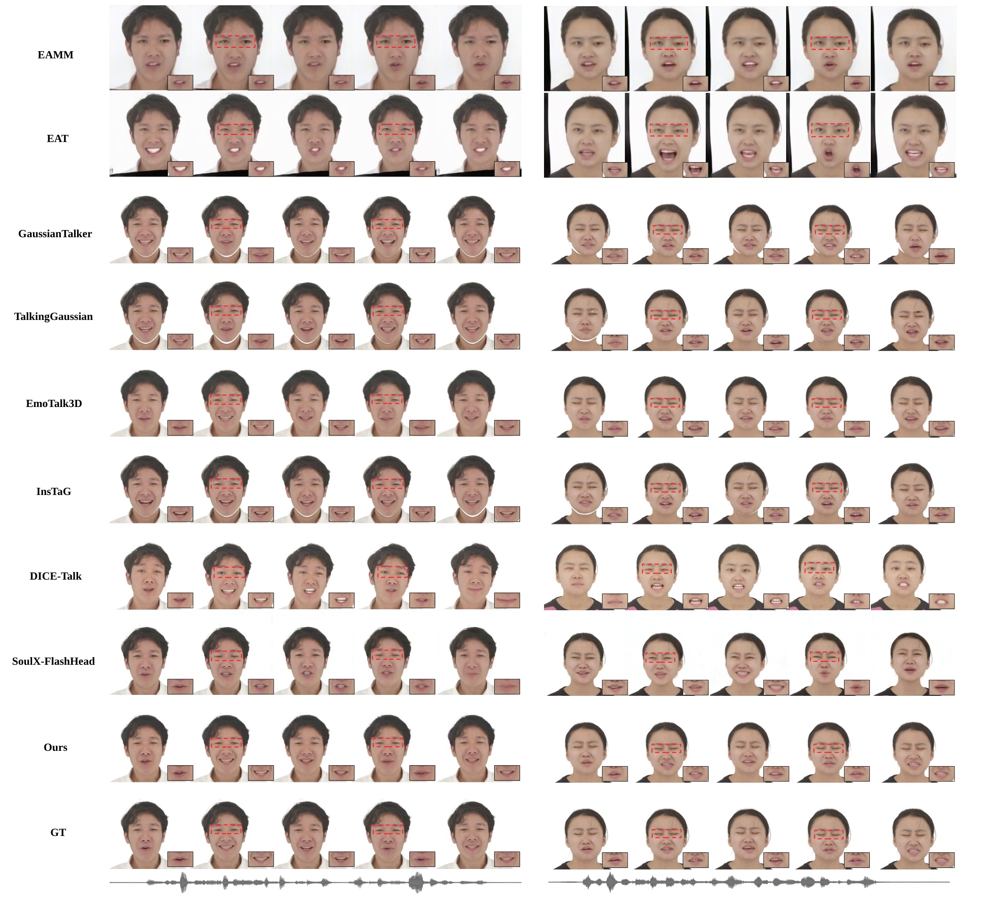
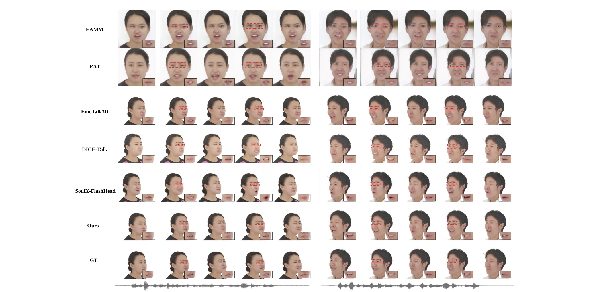
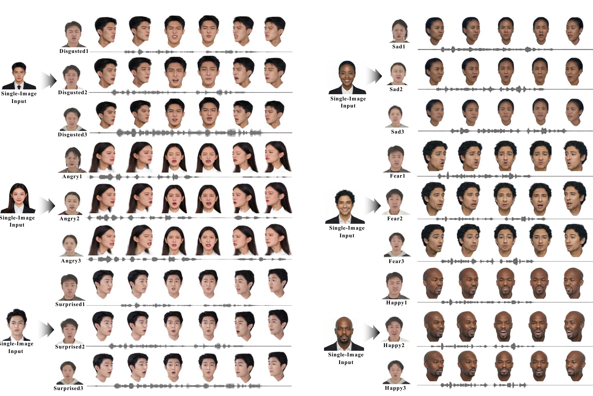
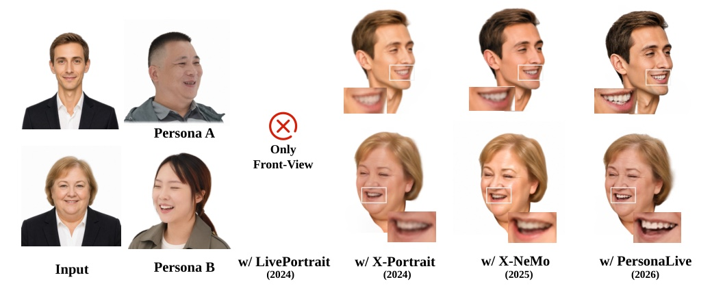

Supplementary video: framework overview, qualitative comparisons, and persona-conditioned emotion transfer results (7 min 43 s, with audio).
Reusable person-level affective priors derived from captured multi-view performances — replacing categorical emotion labels with references that encode how a particular person expresses emotion.
The first unified 3D Gaussian framework for transferring person-specific emotional dynamics to unseen one-shot avatars, combining Audio-to-Geometry, Geometry-to-Texture, and Persona Adaptation.
EmoTalk3D expanded from 30 to 98 subjects with 68 synchronized multi-view captures, evaluated with reference-conditioned perceptual, geometric, and human assessments.
An emotional persona Ei,e = {Ai,e, Ψi,e, Θi,e, Hi,e, Vi,e, βi} bundles emotional speech, tracked FLAME expression & jaw trajectories, head motion, synchronized multi-view observations, and identity shape for identity i and emotion e. Given a selected persona and a one-shot target portrait, the framework animates the target with the persona's characteristic expression, jaw, and head-pose dynamics.

A transformer-based diffusion model generates expression, jaw, and head-pose trajectories from speech. HuBERT features are fused through masked cross-attention, with classifier-free guidance at inference; vertex, velocity, and smoothness objectives ensure stable, persona-true motion.
A persona mapping network fuses DINOv2 identity features, predicted motion, and the emotion label into a style code that modulates a dual-branch StyleUNet generator — a static branch for base appearance and a dynamic branch for expression-dependent residuals of Gaussian attribute maps.
A pretrained portrait animation model synthesizes sparse pseudo-views of the target driven by the persona's speech. Two-stage Pivotal Tuning Inversion then specializes the library-pretrained G2T prior to the unseen identity — from a single portrait, in minutes.
| Visual Fidelity | Motion Quality | Emotion Recognition | Persona Transfer | ||||||||||
|---|---|---|---|---|---|---|---|---|---|---|---|---|---|
| Method | PSNR↑ | LPIPS↓ | SSIM↑ | FVD↓ | FID↓ | LMD↓ | AUE↓ | Sync↑ | Emo.↑ | Neu.↑ | Non-neu.↑ | VRS↑ | ETD↓ |
| EAMM | 9.822 | 0.405 | 0.575 | 941.371 | 123.278 | 20.253 | 4.833 | 2.146 | 0.261 | 0.339 | 0.217 | 0.421 | 0.236 |
| EAT | 14.713 | 0.321 | 0.631 | 605.731 | 110.323 | 14.825 | 4.252 | 3.121 | 0.432 | 0.413 | 0.464 | 0.552 | 0.188 |
| GaussianTalker | 26.931 | 0.154 | 0.776 | 512.829 | 73.710 | 3.616 | 3.631 | 5.762 | 0.313 | 0.482 | 0.251 | 0.574 | 0.174 |
| TalkingGaussian | 27.515 | 0.175 | 0.793 | 508.387 | 78.192 | 3.592 | 3.715 | 6.012 | 0.316 | 0.536 | 0.277 | 0.583 | 0.171 |
| EmoTalk3D | 22.372 | 0.152 | 0.837 | 467.774 | 76.320 | 3.563 | 3.576 | 4.173 | 0.371 | 0.485 | 0.353 | 0.622 | 0.149 |
| InsTaG | 28.114 | 0.098 | 0.838 | 498.332 | 71.897 | 3.312 | 3.591 | 6.325 | 0.334 | 0.523 | 0.314 | 0.631 | 0.143 |
| DICE-Talk | 26.831 | 0.214 | 0.779 | 376.024 | 54.441 | 3.411 | 3.435 | 6.267 | 0.481 | 0.514 | 0.530 | 0.596 | 0.168 |
| SoulX-FlashHead | 27.317 | 0.172 | 0.811 | 391.119 | 56.182 | 3.392 | 3.475 | 5.901 | 0.338 | 0.541 | 0.511 | 0.654 | 0.132 |
| Ours | 30.037 | 0.081 | 0.892 | 367.882 | 53.199 | 3.236 | 3.212 | 5.571 | 0.452 | 0.551 | 0.427 | 0.781 | 0.097 |
Table 1 · Quantitative comparison with existing methods. Bold and underlined values denote the best and second-best results. Our higher VRS and lower ETD indicate closer preservation of the selected persona's emotional dynamics.



One source persona transferred to 7 target identities × 8 emotions (neutral / angry / contempt / disgust / fear / happy / sad / surprised). In each column pair: original identity (left) vs. transferred result (right).
One persona, eight emotions on a shared one-shot target: original identity (left) vs. transferred result (right). Audio-driven lip-sync with persona-specific emotional dynamics — click any clip to hear the driving speech.
The same persona transferred across languages: geometry prediction is driven by speech content, so persona-specific dynamics are preserved for both Chinese and English input.
Happy-emotion transfer with audio: original identity (left) vs. transferred result (right). Click a clip to enable sound.
| Variant | FVD↓ | FID↓ | LMD↓ | AUE↓ | Sync↑ | Emo↑ |
|---|---|---|---|---|---|---|
| Unseen emotion | 603.733 | 72.278 | 4.012 | 4.293 | 5.517 | 0.301 |
| w/o Lsmooth | 402.910 | 63.981 | 3.790 | 3.309 | 2.733 | 0.397 |
| w/o Lvel | 418.113 | 67.856 | 3.872 | 3.688 | 3.762 | 0.446 |
| Full model | 367.882 | 53.199 | 3.236 | 3.212 | 5.571 | 0.452 |
| Variant | PSNR↑ | LPIPS↓ | SSIM↑ |
|---|---|---|---|
| Static-only branch | 28.371 | 0.108 | 0.762 |
| w/o emotion fusion | 28.638 | 0.096 | 0.793 |
| w/o Lstatic | 29.073 | 0.093 | 0.855 |
| w/o Ldynamic | 29.382 | 0.090 | 0.873 |
| Full model | 30.037 | 0.081 | 0.892 |
Table 2 · Ablation study on A2G and G2T modules. The full model achieves the best overall performance.
| Prior | PSNR↑ | LPIPS↓ | FID↓ | Emo-Score↑ | PTI (min)↓ | FPS↑ |
|---|---|---|---|---|---|---|
| LivePortrait | No view-consistent multi-view output (PTI N/A) | |||||
| X-Portrait | 28.785 | 0.115 | 54.83 | 0.429 | < 12 | — |
| X-NeMo (default) | 30.037 | 0.081 | 53.19 | 0.452 | < 10 | 200+ |
| PersonaLive | 30.412 | 0.077 | 51.78 | 0.458 | < 3 | 200+ |
Table 3 · Effect of the 2D animation prior. Stronger multi-view priors improve view consistency, local detail, and adaptation efficiency — advances in animation priors translate directly into gains for our framework.

We introduced Emotional Persona, a 3D Gaussian avatar framework that transfers person-specific emotional dynamics from real multi-view performances to one-shot target portraits. By combining an Emotional Persona Library with A2G, G2T, and one-shot Persona Adaptation, the framework moves emotional control beyond category labels toward reusable real-person references, offering a path toward more individualized and expressive digital avatars.
FLAME may not fully capture extreme expressions or complex mouth geometry, leading to artifacts during persona adaptation, especially under large mouth openings. Stronger geometric representations and animation priors provide a clear path for continued improvement.
@article{emotionalpersona2026,
title = {Emotional Persona: Real-Person Emotion Transfer for 3D Talking Avatars},
author = {Anonymous},
journal = {AAAI Conference on Artificial Intelligence (submission)},
year = {2026}
}